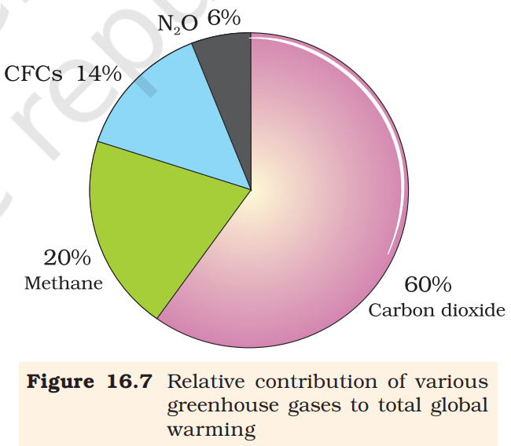

Human population size has grown enormously over the last hundred years. This means increase in demand for food, water, home, electricity, roads, automobiles and numerous other commodities. These demands are exerting tremendous pressure on our natural resources, and are also contributing to pollution of air, water and soil. The need of the hour is to check the degradation and depletion of our precious natural resources and pollution without halting the process of development.
Pollution is any undesirable change in physical, chemical or biological characteristics of air, land, water or soil. Agents that bring about such an undesirable change are called as pollutants. In order to control environmental pollution, the Government of India has passed the Environment(Protection) Act 1986 to protect and improve the quality of our environment(air, water and soil).
Air Pollution and its Control
We are dependent on air for our respiratory needs. Air pollutants cause injury to all living organisms. They reduce growth and yield of crops and cause premature death of plants. Air pollutants also deleteriously affect the respiratory system of humans and of animals. Harmful effects depend on the concentration of pollutants, duration of exposure and the organism.
Smokestacks of thermal power plants, smelters and other industries release particulate and gaseous air pollutants together with harmless gases, such as nitrogen, oxygen, etc. These pollutants must be separated/filtered out before releasing the harmless gases into the atmosphere.

There are several ways of removing particulate matter; the most widely used of which is the electrostatic precipitator, which can remove over 99 per cent particulate matter present in the exhaust from a thermal power plant. It has electrode wires that are maintained at several thousand volts, which produce a corona that releases electrons. These electrons attach to dust particles giving them a net negative charge. The collecting plates are grounded and attract the charged dust particles. The velocity of air between the plates must be low enough to allow the dust to fall. A scrubber can remove gases like sulphur dioxide. In a scrubber, the exhaust is passed through a spray of water or lime. Recently we have realised the dangers of particulate matter that are very very small and are not removed by these precipitators. According to Central Pollution Control Board(CPCB), particulate size 2.5 micrometers or less in diameter(PM 2.5) are responsible for causing the greatest harm to human health. These fine particulates can be inhaled deep into the lungs and can cause breathing and respiratory symptoms, irritation, inflammations and damage to the lungs and premature deaths.
Automobiles are a major cause for atmospheric pollution atleast in the metro cities. As the number of vehicles increase on the streets, this problem is now shifting to the other cities too. Proper maintenance of automobiles along with use of lead-free petrol or diesel can reduce the pollutants they emit. Catalytic converters, having expensive metals namely platinum palladium and rhodium as the catalysts, are fitted into automobiles for reducing emission of poisonous gases. As the exhaust passes through the catalytic converter, unburnt hydrocarbons are converted into carbon dioxide and water, and carbon monoxide and nitric oxide are changed to carbon dioxide and nitrogen gas, respectively. Motor vehicles equipped with catalytic converter should use unleaded petrol because lead in the petrol inactivates the catalyst.
In India, the Air(Prevention and Control of Pollution) Act came into force in 1981, but was amended in 1987 to include noise as an air pollutant. Noise is undesired high level of sound. We have got used to associating loud sounds with pleasure and entertainment not realising that noise causes psychological and physiological disorders in humans. The bigger the city, the bigger the function, the greater the noise!! A brief exposure to extremely high sound level, 150 dB or more generated by take off of a jet plane or rocket, may damage ear drums thus permanently impairing hearing ability. Even chronic exposure to a relatively lower noise level of cities may permanently damage hearing abilities of humans. Noise also causes sleeplessness, increased heart beat, altered breathing pattern, thus considerably stressing humans.
Considering the many dangerous effects of noise pollution can you identify the unnecessary sources of noise pollution around you which can be reduced immediately without any financial loss to anybody? Reduction of noise in our industries can be affected by use of sound absorbent materials or by muffling noise. Stringent following of laws laid down in relation to noise like delimitation of horn-free zones around hospitals and schools, permissible sound-levels of crackers and of loud speakers, timings after which loudspeakers cannot be played, etc., need to be enforced to protect ourselves from noise pollution.
Controlling Vehicular Air Pollution: A Case Study of Delhi
With its very large population of vehicular traffic, Delhi leads the country in its levels of air-pollution - it has more cars than the states of Gujarat and West Bengal put together. In the 1990s, Delhi ranked fourth among the 41 most polluted cities of the world. Air pollution problems in Delhi became so serious that a public interest litigation(PIL) was filed in the Supreme Court of India. After being censured very strongly by the Supreme Court, under its directives, the government was asked to take, within a specified time period, appropriate measures, including switching over the entire fleet of public transport, i.e., buses, from diesel to compressed natural gas(CNG). All the buses of Delhi were converted to run on CNG by the end of 2002. You may ask the question as to why CNG is better than diesel. The answer is that CNG burns most efficiently, unlike petrol or diesel, in the automobiles and very little of it is left unburnt. Moreover, CNG is cheaper than petrol or diesel, cannot be siphoned off by thieves and adulterated like petrol or diesel. The main problem with switching over to CNG is the difficulty of laying down pipelines to deliver CNG through distribution points/pumps and ensuring uninterrupted supply. Simultaneously parallel steps taken in Delhi for reducing vehicular pollution include phasing out of old vehicles, use of unleaded petrol, use of low-sulphur petrol and diesel, use of catalytic converters in vehicles, application of stringent pollution-level norms for vehicles, etc.
The Government of India through a new auto fuel policy has laid out a roadmap to cut down vehicular pollution in Indian cities. More stringent norms for fuels means steadily reducing the sulphur and aromatic content in petrol and diesel fuels. Euro III norms, for example, stipulate that sulphur be controlled at 350 parts-per-million(ppm) in diesel and 150 ppm in petrol. Aromatic hydrocarbons are to be contained at 42 per cent of the concerned fuel. The goal, according to the roadmap, is to reduce sulphur to 50 ppm in petrol and diesel and bring down the level to 35 per cent. Corresponding to the fuel, vehicle engines will also need to be upgraded.
Mass Emission Standards (Bharat Stage II which is equivalent to Euro-II norms) are no more applicable in any of the cities of India. Details of the latest Mass Emission Standards in India are provided below.
| Type of Vehicles |
Norms |
Cities of Implementation |
| 4 Wheelers |
Bharat Stage IV |
Throughout the country
since April 2017 |
| 3 Wheelers |
Bharat Stage IV |
Throughout the country
since 1st April 2017 |
| 2 Wheelers |
Bharat Stage IV |
Throughout the country
since April 2017 |
Thanks to the efforts made, the air quality of Delhi has significantly improved. According to an estimate, a substantial fall in CO_2 and SO_2 level has been found in Delhi between 1997 and 2005.
Water Pollution and its Control
Human beings have been abusing the water-bodies around the world by disposing into them all kinds of waste. We tend to believe that water can wash away everything not taking cognizance of the fact that the water bodies are our lifeline as well as that of all other living organisms. Can you list what all we tend to try and wash away through our rivers and drains? Due to such activities of human kind, the ponds, lakes, stream, rivers, estuaries and oceans are becoming polluted in several parts of the world. Realising the importance of maintaining the cleanliness of the water bodies, the Government of India has passed the Water(Prevention and Control of Pollution) Act, 1974 to safeguard our water resources.
Domestic Sewage and Industrial Effluents

As we work with water in our homes in the cities and towns, we wash everything into drains. Have you ever wondered where the sewage that comes out of our houses go? What happens in villages? Is the sewage treated before being transported to the nearest river and mixed with it? A mere 0.1 per cent impurities make domestic sewage unfit for human use. You have read about sewage treatment plants in Chapter 10. Solids are relatively easy to remove, what is most difficult to remove are dissolved salts such as nitrates, phosphates, and other nutrients, and toxic metal ions and organic compounds. Domestic sewage primarily contains biodegradable organic matter, which readily decomposes - thanks to bacteria and other micro-organisms, which can multiply using these organic substances as substrates and hence utilise some of the components of sewage. It is possible to estimate the amount of biodegradable organic matter in sewage water by measuring Biochemical Oxygen Demand(BOD). Can you explain how? In the chapter on micro organisms you have read about the relation between BOD, micro organisms and the amount of biodegradable matter.
Some of the changes that one may notice following discharge of sewage into a river. Micro-organisms involved in biodegradation of organic matter in the receiving water body consume a lot of oxygen, and as a result there is a sharp decline in dissolved oxygen downstream from the point of sewage discharge. This causes mortality of fish and other aquatic creatures.
Presence of large amounts of nutrients in waters also causes excessive growth of planktonic(free-floating) algae, called an algal bloom which imparts a distinct colour to the water bodies. Algal blooms cause deterioration of the water quality and fish mortality. Some bloom-forming algae are extremely toxic to human beings and animals.
You may have seen the beautiful mauve-colored flowers found on very appealingly-shaped floating plants in water bodies. These plants which were introduced into India for their lovely flowers have caused havoc by their excessive growth by causing blocks in our waterways. They grow faster than our ability to remove them. These are plants of water hyacinth(Eichhornia crassipes), the world’s most problematic aquatic weed, also called ‘Terror of Bengal’. They grow abundantly in eutrophic water bodies, and lead to an imbalance in the ecosystem dynamics of the water body.
Sewage from our homes as well as from hospitals are likely to contain many undesirable pathogenic micro organisms, and its disposal into a water without proper treatment may cause outbreak of serious diseases, such as, dysentery, typhoid, jaundice, cholera, etc.
Unlike domestic sewage, waste water from industries like petroleum, paper manufacturing, metal extraction and processing, chemical manufacturing, etc., often contain toxic substances, notably, heavy metals(defined as elements with density > 5 \frac{g}{cm^3} such as mercury, cadmium, copper, lead, etc) and a variety of organic compounds.
A few toxic substances, often present in industrial waste waters, can undergo biological magnification(Biomagnification) in the aquatic food chain. Biomagnification refers to increase in concentration of the toxicant at successive trophic levels. This happens because a toxic substance accumulated by an organism cannot be metabolised or excreted, and is thus passed on to the next higher trophic level. This phenomenon is well known for mercury and DDT. Biomagnification of DDT in an aquatic food chain. In this manner, the concentration of DDT is increased at successive trophic levels; say if it starts at 0.003 ppb(ppb = parts per billion) in water, it can ultimately reach 25 ppm (ppm = parts per million) in fish-eating birds, through biomagnification. High concentrations of DDT disturb calcium metabolism in birds, which causes thinning of eggshell and their premature breaking, eventually causing decline in bird populations.
Eutrophication is the natural aging of a lake by nutrient enrichment of its water. In a young lake the water is cold and clear, supporting little life. With time, streams draining into the lake introduce nutrients such as nitrogen and phosphorus, which encourage the growth of aquatic organisms. As the lake’s fertility increases, plant and animal life burgeons, and organic remains begin to be deposited on the lake bottom. Over the centuries, as silt and organic debris pile up, the lake grows shallower and warmer, with warm-water organisms supplanting those that thrive in a cold environment. Marsh plants take root in the shallows and begin to fill in the original lake basin. Eventually, the lake gives way to large masses of floating plants(bog), finally converting into land. Depending on climate, size of the lake and other factors, the natural aging of a lake may span thousands of years. However, pollutants from man’s activities like effluents from the industries and homes can radically accelerate the aging process. This phenomenon has been called Cultural or Accelerated Eutrophication. During the past century, lakes in many parts of the earth have been severely eutrophied by sewage and agricultural and industrial wastes. The prime contaminants are nitrates and phosphates, which act as plant nutrients. They overstimulate the growth of algae, causing unsightly scum and unpleasant odours, and robbing the water of dissolved oxygen vital to other aquatic life. At the same time, other pollutants flowing into a lake may poison whole populations of fish, whose decomposing remains further deplete the water’s dissolved oxygen content. In such fashion, a lake can literally choke to death.
Heated(thermal) wastewaters flowing out of electricity-generating units, e.g., thermal power plants, constitute another important category of pollutants. Thermal wastewater eliminates or reduces the number of organisms sensitive to high temperature, and may enhance the growth of plants and fish in extremely cold areas but, only after causing damage to the indigenous flora and fauna.
A Case Study of Integrated Waste Water Treatment
Wastewater including sewage can be treated in an integrated manner, by utilising a mix of artificial and natural processes. An example of such an initiative is the town of Arcata, situated along the northern coast of California. Collaborating with biologists from the Humboldt State University, the townspeople created an integrated waste water treatment process within a natural system. The cleaning occurs in two stages - (a) the conventional sedimentation, filtering and chlorine treatments are given. After this stage, lots of dangerous pollutants like dissolved heavy metals still remain. To combat this, an innovative approach was taken and (b) the biologists developed a series of six connected marshes over 60 hectares of marshland. Appropriate plants, algae, fungi and bacteria were seeded into this area, which neutralise, absorb and assimilate the pollutants. Hence, as the water flows through the marshes, it gets purified naturally.
The marshes also constitute a sanctuary, with a high level of biodiversity in the form of fishes, animals and birds that now reside there. A citizens group called Friends of the Arcata Marsh(FOAM) are responsible for the upkeep and safeguarding of this wonderful project.
All this time, we have assumed that removal of wastes requires water, i.e., the creation of sewage. But what if water is not necessary to dispose off human waste, like excreta? Can you imagine the amount of water that one can save if one didn’t have to flush the toilet? Well, this is already a reality. Ecological sanitation is a sustainable system for handling human excreta, using dry composting toilets. This is a practical, hygienic, efficient and cost-effective solution to human waste disposal. The key point to note here is that with this composting method, human excreta can be recycled into a resource (as natural fertiliser), which reduces the need for chemical fertilisers. There are working ‘EcoSan’ toilets in many areas of Kerala and Sri Lanka.
Solid Wastes
Solid wastes refer to everything that goes out in trash. Municipal solid wastes are wastes from homes, offices, stores, schools, hospitals, etc., that are collected and disposed by the municipality. The municipal solid wastes generally comprise paper, food wastes, plastics, glass, metals, rubber, leather, textile, etc. Burning reduces the volume of the wastes, although it is generally not burnt to completion and open dumps often serve as the breeding ground for rats and flies. Sanitary landfills were adopted as the substitute for open-burning dumps. In a sanitary landfill, wastes are dumped in a depression or trench after compaction, and covered with dirt everyday. If you live in a town or city, do you know where the nearest landfill site is? Landfills are also not really much of a solution since the amount of garbage generation specially in the metros has increased so much that these sites are getting filled too. Also there is danger of seepage of chemicals, etc., from these landfills polluting the underground water resources.
A solution to all this can only be in human beings becoming more sensitive to these environment issues. All waste that we generate can be categorised into three types - (a) bio-degradable, (b) recyclable and (c) the non-biodegradable. It is important that all garbage generated is sorted. What can be reused or recycled should be separated out; our kabadiwallahs and rag-pickers do a great job of separation of materials for recycling. The biodegradable materials can be put into deep pits in the ground and be left for natural breakdown. That leaves only the non biodegradable to be disposed off. The need to reduce our garbage generation should be a prime goal, instead, we are increasing the use of non-biodegradable products. Just pick any readymade packet of any ‘good quality’ eatable, say a biscuit packet, and study the packaging - do you see the number of protective layers used? Note that atleast one layer is of plastic. We have started packaging even our daily use products like milk and water in polybags!! In cities, fruits and vegetables can be bought packed in beautiful polysterene and plastic packaging - we pay so much and what do we do? Contribute heavily to environmental pollution. State Governments across the country are trying to push for reduction in use of plastics and use of eco-friendly packaging. We can do our bit by carrying cloth or other natural fibre carry-bags when we go shopping and by refusing polythene bags.
Hospitals generate hazardous wastes that contain disinfectants and other harmful chemicals, and also pathogenic micro-organisms. Such wastes also require careful treatment and disposal. The use of incinerators is crucial to disposal of hospital waste.
Irreparable computers and other electronic goods are known as electronic wastes(e-wastes). E-wastes are burried in landfills or incinerated. Over half of the e-wastes generated in the developed world are exported to developing countries, mainly to China, India and Pakistan, where metals like copper, iron, silicon, nickel and gold are recovered during recycling process. Unlike developed countries, which have specifically built facilities for recycling of e-wastes, recycling in developing countries often involves manual participation thus exposing workers to toxic substances present in e-wastes. Recycling is the only solution for the treatment of e-waste, provided it is carried out in an environment friendly manner.
Case Study of Remedy for Plastic Waste
A plastic sack manufacturer in Bangalore has managed to find the ideal solution to the ever-increasing problem of accumulating plastic waste. Ahmed Khan, aged 57 years old, has been producing plastic sacks for 20 years. About 8 years ago, he realised that plastic waste was a real problem. Polyblend, a fine powder of recycled modified plastic, was developed then by his company. This mixture is mixed with the bitumen that is used to lay roads. In collaboration with R.V.College of Engineering and the Bangalore City Corporation, Ahmed Khan proved that blends of Polyblend and bitumen, when used to lay roads, enhanced the bitumen’s water repellant properties, and helped to increase road life by a factor of three. The raw material for creating Polyblend is any plastic film waste. So, against the price of Rs. 0.40 per kg that rag pickers had been getting for plastic waste, Khan now offers Rs.6. Using Khan’s technique, by the year 2002, more than 40 kms of road in Bangalore has already been laid. At this rate, Khan will soon be running short of plastic waste in Bangalore, to produce Polyblend. Thanks to innovations like Polyblend, we might still avoid being smothered by plastic waste.
Agro - Chemicals and their Effects
In the wake of green revolution, use of inorganic fertilisers and pesticides has increased manifold for enhancing crop production. Pesticides, herbicides, fungicides, etc., are being increasingly used. These incidentally, are also toxic to non-target organisms,that are important components of the soil ecosystem. Do you think these can be biomagnified in the terrestrial ecosystems? We know what the addition of increasing amounts of chemical fertilisers can do to aquatic ecosystems eutrophication. The current problems in agriculture are, therefore, extremely grave.
Case Study of Organic Farming
Integrated organic farming is a cyclical, zero-waste procedure, where waste products from one process are cycled in as nutrients for other processes. This allows the maximum utilisation of resource and increases the efficiency of production. Ramesh Chandra Dagar, a farmer in Sonipat, Haryana, is doing just this. He includes bee-keeping, dairy management, water harvesting, composting and agriculture in a chain of processes, which support each other and allow an extremely economical and sustainable venture. There is no need to use chemical fertilisers for crops, as cattle excreta(dung) are used as manure. Crop waste is used to create compost, which can be used as a natural fertiliser or can be used to generate natural gas for satisfying the energy needs of the farm. Enthusiastic about spreading information and help on the practice of integrated organic farming, Dagar has created the Haryana Kisan Welfare Club, with a current membership of 5000 farmers.
Radioactive Wastes
Initially, nuclear energy was hailed as a non-polluting way for generating electricity. Later on, it was realised that the use of nuclear energy has two very serious inherent problems. The first is accidental leakage, as occurred in the Three Mile Island and Chernobyl incidents and the second is safe disposal of radioactive wastes.
Radiation, that is given off by nuclear waste is extremely damaging to organisms, because it causes mutations at a very high rate. At high doses, nuclear radiation is lethal but at lower doses, it creates various disorders, the most frequent of all being cancer. Therefore, nuclear waste is an extremely potent pollutant and has to be dealt with utmost caution.
It has been recommended that storage of nuclear waste, after sufficient pre-treatment, should be done in suitably shielded containers buried within the rocks, about 500 m deep below the earth’s surface. However, this method of disposal is meeting stiff opposition from the public. Why do you think this method of disposal is not agreeable to many people?
Greenhouse Effect and Global Warming
The term ‘Greenhouse effect’ has been derived from a phenomenon that occurs in a greenhouse. Have you ever seen a greenhouse? It looks like a small glass house and is used for growing plants especially during winter. In a greenhouse the glass panel lets the light in, but does not allow heat to escape. Therefore, the greenhouse warms up, very much like inside a car that has been parked in the sun for a few hours.
The greenhouse effect is a naturally occurring phenomenon that is responsible for heating of Earth’s surface and atmosphere. You would be surprised to know that without greenhouse effect the average temperature at surface of Earth would have been a chilly - 18^{\circ} C rather than the present average of 15^{\circ} C . In order to understand the greenhouse effect, it is necessary to know the fate of the energy of sunlight that reaches the outermost atmosphere
Clouds and gases reflect about one-fourth of the incoming solar radiation, and absorb some of it but almost half of incoming solar radiation falls on Earth’s surface heating it, while a small proportion is reflected back. Earth’s surface re-emits heat in the form of infrared radiation but part of this does not escape into space as atmospheric gases(e.g., carbon dioxide, methane, etc.) absorb a major fraction of it. The molecules of these gases radiate heat energy, and a major part of which again comes to Earth’s surface, thus heating it up once again. This cycle is repeated many a times. The above-mentioned gases – carbon dioxide and methane - are commonly known as greenhouse gases because they are responsible for the greenhouse effect.

Increase in the level of greenhouse gases has led to considerable heating of Earth leading to global warming. During the past century, the temperature of Earth has increased by 0.6^{\circ} C , most of it during the last three decades. Scientists believe that this rise in temperature is leading to deleterious changes in the environment and resulting in odd climatic changes(e.g. El Nino effect) , thus leading to increased melting of polar ice caps as well as of other places like the Himalayan snow caps. Over many years, this will result in a rise in sea level that can submerge many coastal areas. The total spectrum of changes that global warming can bring about is a subject that is still under active research.
How can we control global warming? The measures include cutting down use of fossil fuel, improving efficiency of energy usage, reducing deforestation, planting trees and slowing down the growth of human population. International initiatives are also being taken to reduce the emission of greenhouse gases into the atmosphere.
Ozone Depletion in the Stratosphere
In the lower atmosphere(troposphere) that harms plants and animals. There is ‘good’ ozone also; this ozone is found in the upper part of the atmosphere called the stratosphere, and it acts as a shield absorbing ultraviolet radiation from the sun. UV rays are highly injurious to living organisms since DNA and proteins of living organisms preferentially absorb UV rays, and its high energy breaks the chemical bonds within these molecules. The thickness of the ozone in a column of air from the ground to the top of the atmosphere is measured in terms of Dobson units(DU).
Ozone gas is continuously formed by the action of UV rays on molecular oxygen, and also degraded into molecular oxygen in the stratosphere. There should be a balance between production and degradation of ozone in the stratosphere. Of late, the balance has been disrupted due to enhancement of ozone degradation by chlorofluorocarbons(CFCs). CFCs find wide use as refrigerants. CFCs discharged in the lower part of atmosphere move upward and reach stratosphere. In stratosphere, UV rays act on them releasing Cl atoms. Cl degrades ozone releasing molecular oxygen, with these atoms acting merely as catalysts; Cl atoms are not consumed in the reaction. Hence, whatever CFCs are added to the stratosphere, they have permanent and continuing effects on Ozone levels. Although ozone depletion is occurring widely in the stratosphere, the depletion is particularly marked over the Antarctic region. This has resulted in formation of a large area of thinned ozone layer, commonly called as the ozone hole.
UV radiation of wavelengths shorter than UV-B, are almost completely absorbed by Earth’s atmosphere, given that the ozone layer is intact. But, UV-B damages DNA and mutation may occur. It causes aging of skin, damage to skin cells and various types of skin cancers. In human eye, cornea absorbs UV-B radiation, and a high dose of UV-B causes inflammation of cornea, called snow-blindness, cataract, etc. Such exposure may permanently damage the cornea.
Recognising the deleterious affects of ozone depletion, an international treaty, known as the Montreal Protocol, was signed at Montreal(Canada) in 1987(effective in 1989) to control the emission of ozone depleting substances. Subsequently many more efforts have been made and protocols have laid down definite roadmaps, separately for developed and developing countries, for reducing the emission of CFCs and other ozone depleting chemicals.
Degradation by Improper Resource Utilisation and Maintenance
The degradation of natural resources can occur, not just by the action of pollutants but also by improper resource utilisation practices.
Soil erosion and desertification: The development of the fertile top-soil takes centuries. But, it can be removed very easily due to human activities like over-cultivation, unrestricted grazing, deforestation and poor irrigation practices, resulting in arid patches of land. When large barren patches extend and meet over time, a desert is created. Internationally, it has been recognised that desertification is a major problem nowadays, particularly due to increased urbanisation.
Waterlogging and soil salinity: Irrigation without proper drainage of water leads to waterlogging in the soil. Besides affecting the crops, waterlogging draws salt to the surface of the soil. The salt then is deposited as a thin crust on the land surface or starts collecting at the roots of the plants. This increased salt content is inimical to the growth of crops and is extremely damaging to agriculture. Waterlogging and soil salinity are some of the problems that have come in the wake of the Green Revolution.
Deforestation
Deforestation is the conversion of forested areas to non-forested ones. According to an estimate, almost 40 per cent forests have been lost in the tropics, compared to only 1 per cent in the temperate region. The present scenario of deforestation is particularly grim in India. At the beginning of the twentieth century, forests covered about 30 per cent of the land of India. By the end of the century, it shrunk to 21.54 per cent, whereas the National Forest Policy(1988) of India has recommended 33 per cent forest cover for the plains and 67 per cent for the hills.
How does deforestation occur? A number of human activities contribute to it. One of the major reasons is the conversion of forest to agricultural land so as to feed the growing human population. Trees are axed for timber, firewood, cattle ranching and for several other purposes. Slash and burn agriculture, commonly called as Jhum cultivation in the north-eastern states of India, has also contributed to deforestation. In slash and burn agriculture, the farmers cut down the trees of the forest and burn the plant remains. The ash is used as a fertiliser and the land is then used for farming or cattle grazing. After cultivation, the area is left for several years so as to allow its recovery. The farmers then move on to other areas and repeat this process. In earlier days, when Jhum cultivation was in prevalence, enough time-gap was given so that the land recovered from the effect of cultivation. With increasing population, and repeated cultivation, this recovery phase is done away with, resulting in deforestation.
What are the consequences of deforestation? One of the major effects is enhanced carbon dioxide concentration in the atmosphere because trees that could hold a lot of carbon in their biomass are lost with deforestation. Deforestation also causes loss of biodiversity due to habitat destruction, disturbs hydrologic cycle, causes soil erosion, and may lead to desertification in extreme cases.
Reforestation is the process of restoring a forest that once existed but was removed at some point of time in the past. Reforestation may occur naturally in a deforested area. However, we can speed it up by planting trees with due consideration to biodiversity that earlier existed in that area
Case Study of People’s Participation in Conservation of Forests
People’s participation has a long history in India. In 1731, the king of Jodhpur in Rajasthan asked one of his ministers to arrange wood for constructing a new palace. The minister and workers went to a forest near a village, inhabited by Bishnois, to cut down trees. The Bishnoi community is known for its peaceful co-existence with nature. The effort to cut down trees by the kings was thwarted by the Bishnois. A Bishnoi woman Amrita Devi showed exemplary courage by hugging a tree and daring king’s men to cut her first before cutting the tree. The tree mattered much more to her than her own life. Sadly, the king’s men did not heed to her pleas, and cut down the tree along with Amrita Devi. Her three daughters and hundreds of other Bishnois followed her, and thus lost their lives saving trees. Nowhere in history do we find a commitment of this magnitude when human beings sacrificed their lives for the cause of the environment. The Government of India has recently instituted the Amrita Devi Bishnoi Wildlife Protection Award for individuals or communities from rural areas that have shown extraordinary courage and dedication in protecting wildlife.
You may have heard of the Chipko Movement of Garhwal Himalayas. In 1974, local women showed enormous bravery in protecting trees from the axe of contractors by hugging them. People all over the world have acclaimed the Chipko movement.
Realising the significance of participation by local communities, the Government of India in 1980s has introduced the concept of Joint Forest Management(JFM) so as to work closely with the local communities for protecting and managing forests. In return for their services to the forest, the communities get benefit of various forest products(e.g., fruits, gum, rubber, medicine, etc.), and thus the forest can be conserved in a sustainable manner.